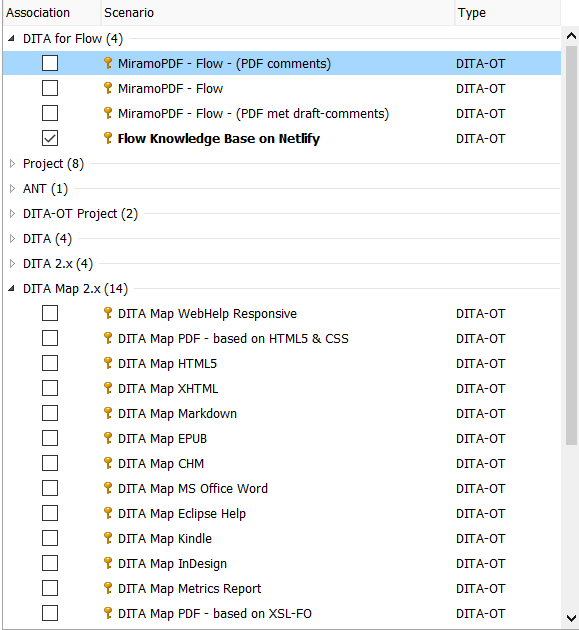

Output formats of the DITA OT
These are some of the most common standard output formats for the DITA OT (as supported by Oxygen):

- PDF (see To import the MiramoPDF customization transformation scenario)
- WebHelp (see To create a transformation scenario)
- XHTML
- Markdown
- HTML help
- Eclipse help